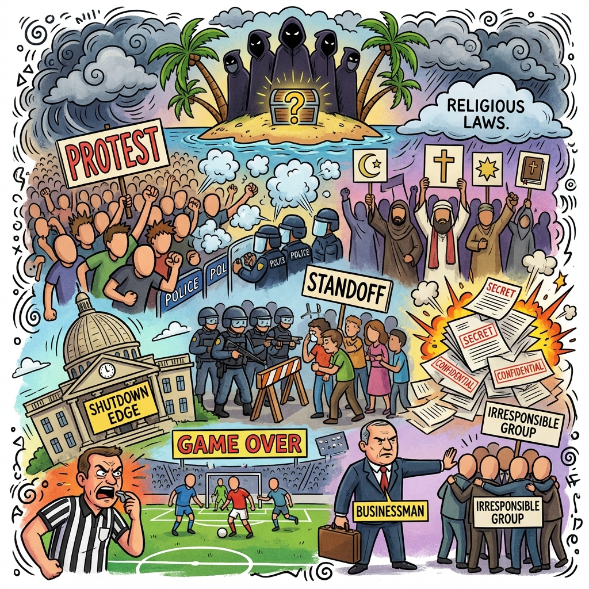

The Daily Globe: Escândalo Epstein Ressurge com Laços Geopolíticos, Tiroteios da ICE em Minnesota, and Árbitro Xinga Jogador no Clássico San-São
Published on 2026-02-02

World
- Escândalo Epstein Ressurge com Laços Geopolíticos
Declarações antigas de Putin sobre 'pedófilos satânicos' no Ocidente viralizam, ligadas a arquivos Epstein e debates culturais.
- Protestos Violentos Anti-ICE Escalada nas Cidades dos EUA
Protestos em Portland e Los Angeles viram caóticos com arremesso de pedras, gás lacrimogêneo e feridos.
- Chamados por Lei Sharia Provocam Fúria na Suécia
Extremistas muçulmanos protestam por Sharia, gerando backlash sobre imigração e choques culturais.
USA
- Tiroteios da ICE em Minnesota
Agentes federais matam civis em batidas de imigração, provocando protestos e debates sobre força excessiva.
- Liberação de Arquivos Epstein
DOJ divulga 3 milhões de páginas com detalhes gráficos, nomes de celebridades e fotos constrangedoras.
- Quase Paralisação Governamental
Disputa por fundos DHS evitada no último minuto em meio a tensões de imigração.
Brazil
- Árbitro Xinga Jogador no Clássico San-São
Juiz João Vitor Gobi acusado de xingar lateral Vinícius Lira no Paulistão, gerando confusão.
- Tallis Gomes Revela 'Alergia a Esquerdistas'
Empreendedor diz não contratar esquerdistas por 'alergia à responsabilidade' em sua empresa.
- Críticas ao MBL como 'Comunismo Perfumado'
Debates intensos sobre Renan Santos e MBL na política brasileira, vistos como inimigos do bolsonarismo.
Topic Index
- epstein-scandal
- immigration-protests
- sharia-demands
- police-shootings
- epstein-files
- dhs-funding
- football-arbitration
- leftist-hiring-bias